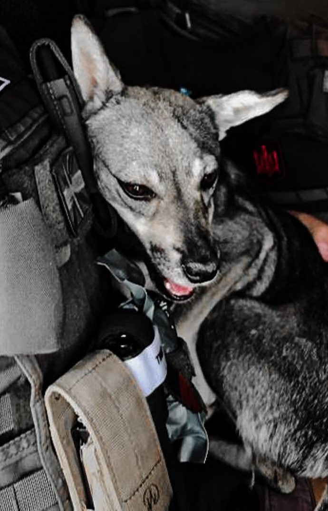

Fed by soldiers. Named by soldiers.
In the first year of the war, on the front line in the Kharkiv region, a small dog with enormous ears started turning up where the soldiers were. They fed her. She stayed. In her own way she had adopted them, and they gave her a name that fitted the place: Kulya. Bullet.
Then one day she was hit by a vehicle. An injured dog cannot be looked after on a front line, so the soldiers asked K9 Rescue to take her. It was August 2022, before the region was liberated.

NameKulya (Куля), "Bullet"
Named bySoldiers who fed her on the front line
WhereKharkiv region, before liberation
WhenAugust 2022, the first year of the war
Handed toK9 Rescue, at the soldiers' request
At homePulya (Пуля), or Puleshka
Days since0 and counting